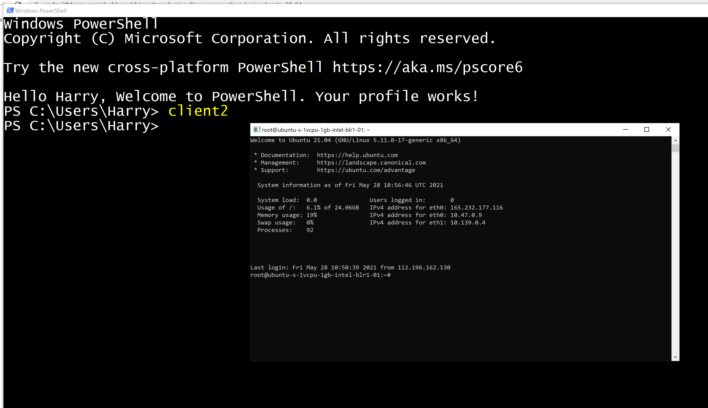

In this post, I will show you how to avoid entering passwords multiple times while managing your servers. Also, I will tell you few tricks I use to manage multiple servers efficiently. Let's start with uploading files to the server
In order to upload files to your server, you can use an SFTP client like Filezilla which simply can be used by entering your server IP, username, and password. Follow the steps below:
FileZilla Client is a fast and reliable cross-platform FTP, FTPS, and SFTP client with lots of useful features and an intuitive graphical user interface. Download this free software from here
Install Filezilla on your computer and open it.
Enter your server IP, username, and password inside the boxes at the top in FileZilla. Make sure your enter 22 as the port. Press enter and wait for some time.
You can now upload files to your server by navigating to the directory of your choice and dragging/dropping your files into the folder(on your server) of your choice.
Every time we need to log in to our server, we type 'ssh user@ip-address' command followed by the strong password which is quite cumbersome.
We can avoid typing this strong password without having to compromise security by authorizing our machine to log in to the server without the password every time we type a single (short) command. Follow the steps below:
We can create a private-public key pair using ssh-keygen. Execute the following command on your server:
ssh-keygen -t rsa
This generates a private-public key pair on your computer. Press enter 3 times to choose the default options.
Login to your server using ssh(preferably non-root user) and password and execute the following command:
cd ~ mkdir .ssh
This will create a .ssh in the home directory ('/home/harry/' in my case) of your user. DigitalOcean droplet ships with a root account so creating this '.ssh' directory is not needed if you want to configure serverless login for root.
Execute the following command on your host computer:
scp C:\Users\Harry\.ssh\id_rsa.pub harry@165.232.177.116:~/.ssh/authorized_keys
Replace 'C:\Users\Harry' with your user home directory on Windows. You will be prompted for the password. Enter your password and your ssh key will be deployed.
Try to log into your server by entering the following command. Replace user with your username and ip-address with your server's ip address
ssh user@ip-address
If you are using Windows Powershell, you can use PowerShell profiles to efficiently log in to multiple servers. Personally, I manage multiple servers including the one which hosts this site. I need to switch from a personal server to my client's server on a very regular basis. It gets hectic to remember multiple passwords and type them repeatedly. Hence I use PowerShell functions to manage multiple servers. If you are overwhelmed, don't! This is easier than you think and once you configure it you will never look back. Follow the below steps:
Create a PowerShell profile using the command below:
New-Item $profile -Type File -Force
This creates a PowerShell profile that will execute whenever you start PowerShell on your computer.
Open your PowerShell profile by executing the following command on Windows:
notepad $profile
As a part of the next step, we will add few functions to our PowerShell profile. Paste the following code to your profile
echo "Hello Harry, Welcome to PowerShell. Your profile works!"
function personal{
Start-Process ssh harry@189.59.45.126
}
function client1{
Start-Process ssh harry@139.39.45.126
}
function client2{
Start-Process ssh root@239.59.45.126
}
Replace the usernames and IP addresses with the actual values of your servers. Finally, save and close the file.
If you don't restart PowerShell you will see an error like this:
PS C:\Users\Harry> notepad $profile
PS C:\Users\Harry> client2
client2 : The term 'client2' is not recognized as the name of a cmdlet,
function, script file, or operable program. Check the spelling of the name, or
if a path was included, verify that the path is correct and try again.
At line:1 char:1
+ client2
+ ~~~~~~~
+ CategoryInfo : ObjectNotFound: (client2:String) [CommandNotFou
ndException
+ FullyQualifiedErrorId : CommandNotFoundException
Restart your PowerShell and type client2:
Your profile should now work. Close all the PowerShell instances and reopen PowerShell. Now try to execute any one of the following commands:
personal
client1
client2
Wow we are now able the server we created for our client by issuing a single word command ir 'client1'
Note: You can always configure serverless login for a root user but using a root accounts for day-to-day activities is not recommeneded.
You can configure as many servers as you want of your choice. Hope you understood and will start incorporating this into your server workflows. Happy Coding!